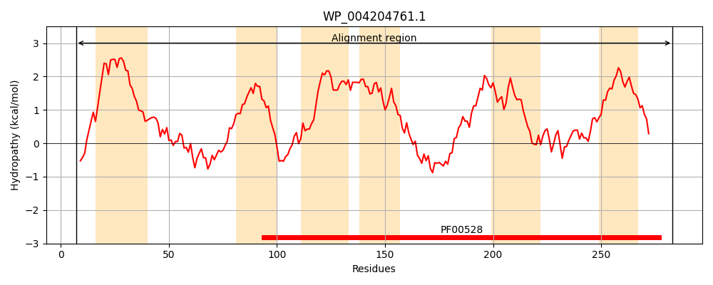
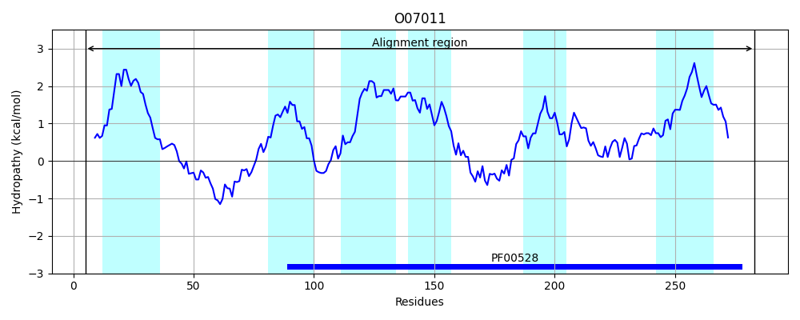
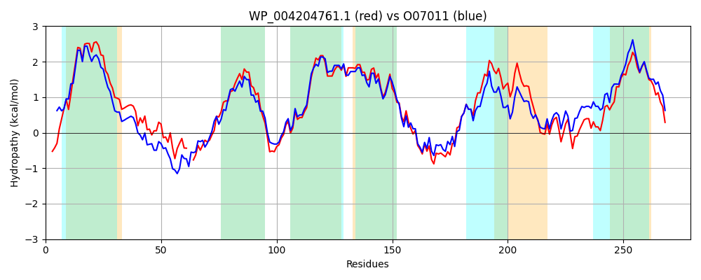

Hit Accession: O07011
Hit TCID: 3.A.1.1.2
Hit Description: gnl|BL_ORD_ID|6784 gnl|TC-DB|O07011|3.A.1.1.2 Putative arabinogalactan oligomer transport system permease protein ganQ OS=Bacillus subtilis GN=ganQ PE=3 SV=1
Mach Len: 279
e:0.000000
Query TMS Count : 6
Hit TMS Count: 6
TMS-Overlap Score: 5.350000
Predicted Substrates:CHEBI:24151;galactooligosaccharide
BLAST Alignment:
Score: 975 , Bit scores: 380 bits, E-value: 5.1e-134, Alignment length: 279, Percentage identity: 66
Query: 7 IKREKWIRLSLTWLVVILVSVVIIYPLVWTVGASLNAGNSLLSTSIIPENLSFQHYADLFNG--NVNYLTWYWNSMKISFLTMVLTLISVSFTAYAFSRFRFKGRQNGLMLFLLLQMIPQFSALIAIFVLSQLLGLINSHLALVLIYVGGMIPMNTWLMKGYLDAIPKDLDESARMDGASSFRIFIEIIMPLSRPILAVVALFSFTGPLGDFILSSTILRTPDKYTLPIGLYNLVAQKMGASYTTYAAGAVLIAVPVAILYLALQKYFVSGLTSGSTKG 283
+K ++IRL ++L++ ++V+I+YPL+WT GAS N GNSL+STSIIP++ +F HY +LF G ++ Y+ WY NSMKIS TM +L+ V+FTAYAFSRFRFKGR+ L LFLLLQMIPQFSALIA+FVL+Q+LG+INSH L+L+Y+GG+IPMNT+LMKGY+D+IP DLDESA++DGASS RIF +II+PLS+P+ AVVA+ FTGPLGDF+LSSTILRTP+ YTLP+GL+NLV MGASYTT+AAGA+LI++PVA++++ LQK FVSGLT+G TKG
Sbjct: 5 MKVRRYIRLLFSYLLLAFMAVIIVYPLLWTAGASFNPGNSLISTSIIPKHPTFDHYKELFAGKESLQYVQWYVNSMKISLFTMAGSLLCVTFTAYAFSRFRFKGRKYALTLFLLLQMIPQFSALIALFVLAQILGMINSHWLLILLYIGGLIPMNTYLMKGYMDSIPMDLDESAKIDGASSTRIFFQIILPLSKPMAAVVAMNGFTGPLGDFVLSSTILRTPESYTLPVGLFNLVNDVMGASYTTFAAGALLISIPVAVIFIMLQKNFVSGLTAGGTKG 283 | Protein Hydropathy Plots: |
|---|
|  |  |
Pairwise Alignment-Hydropathy Plot:
|
|---|
|  |